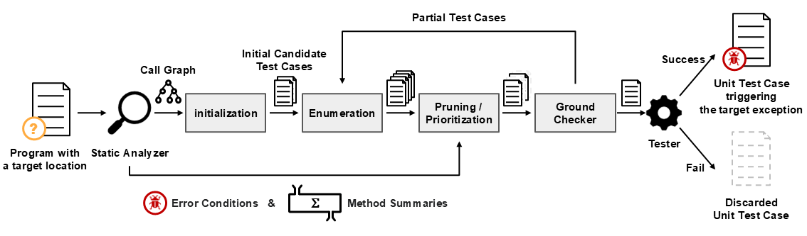

UnitCon
Synthesizing Targeted Unit Tests for Java Runtime Exceptions
Overview of UnitCon


The overall structure of UnitCon is illustrated below. 1. Initialization For the given target program location. UnitCon first the error entry methods using the call graph derived by the static analyzer. Then UnitCon generates an initial set of partial test cases each of which calls an error entry methods. Such partial test cases are written in a domain-specific language that we designed for the synthesis. 2. Enumeration Given a set of partial test cases, UnitCon enumerates new partial unit tests by expanding the placeholders. ...
We experimented to find Null Pointer Exception bugs in 51 popular libraries, and reported 21 bugs to the maintainers of each library. Of these, 4 reports are still open. The table below lists the open bugs. Project Report Status Activiti Issue 4553 Open Apache Commons Math Issue 236 Open Apache TsFile Issue 50 Open Nutz Issue 1613 Open
We experimented to find Null Pointer Exception bugs in 51 popular libraries, and reported 21 bugs to the maintainers of each library. Of these, 15 reports have been patched. The table below lists the patched bugs. Project Report Status Apache Commons BCEL Issue 289 Patched Apache Commons Configuration Issue 355 Patched Apache Commons Configuration Issue 365 Patched Apache Commons Configuration Issue 368 Patched Apache Commons Configuration Issue 381 Patched Apache Commons DBCP Issue 352 Patched Apache Johnzon Issue 117 Patched Apache Johnzon Issue 123 Patched Apache Karaf Issue 1825 Patched Apache Karaf Issue 1826 Patched Apache PDFBox Issue 178 Patched Feign Issue 2304 Patched JSqlParser Issue 1965 Patched Kubernetes Java Client Issue 3081 Patched OpenGrok Issue 4542 Patched
We experimented to find Null Pointer Exception bugs in 51 popular libraries, and reported 21 bugs to the maintainers of each library. Of these, 2 reports were rejected. The table below lists the rejected bugs. Project Report Status Apache Commons Configuration Issue 382 Rejected Apache Commons IO Issue 569 Rejected